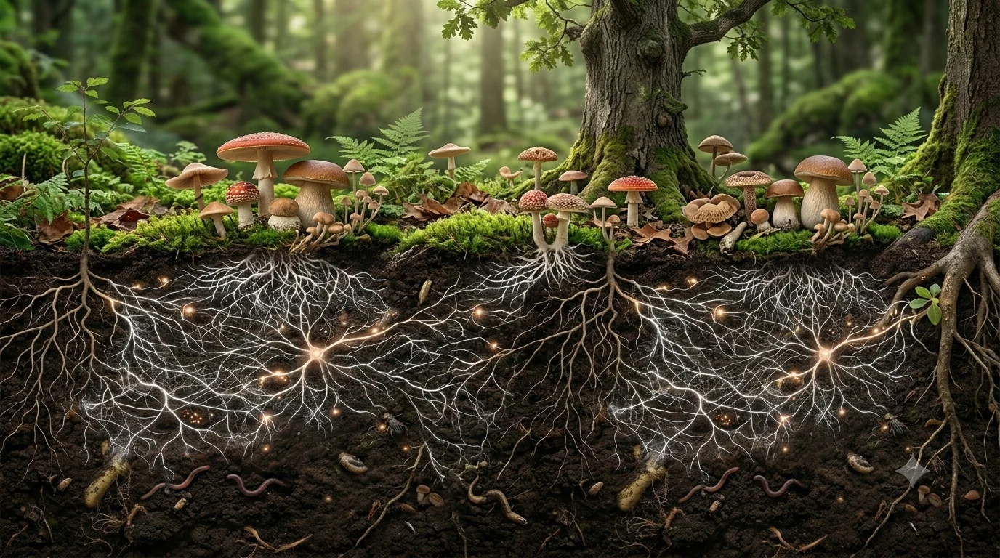

Köklerle mantarların ortaklığı
“Mikoriza”, belirli mantarların bitki kökleriyle kurduğu ortak yaşam ilişkisini ifade eder. Mantarın ince hifleri toprakta kökün erişemediği noktalara uzanabilir; bitki ise fotosentezle elde ettiği karbonun bir bölümünü mantara verir. Mantarlar, bitki için fosfor ve azot gibi besinlerin alınmasına katkıda bulunabilir. Bu alışverişin kapsamı mantar ve bitki türüne, toprağa ve çevre koşullarına göre değişir; her mikorizal birlikteliğin iki tarafa eşit veya her koşulda net yarar sağladığı varsayılmamalıdır.[1]
Ne zaman “ortak mikorizal ağ” denebilir?
Bir mantar türünün hifleri birden fazla bitkinin köklerine bağlandığında, bitkileri yeraltında birleştiren ortak mikorizal ağdan söz edilir. Ancak aynı mantar türünün bulunması veya köklerle ilişkili olması, tek başına iki bitki arasında işlevsel bir bağlantı ya da anlamlı kaynak aktarımı olduğunu kanıtlamaz. Ağların ormanlarda ne kadar yaygın olduğu ve ekosistem ölçeğindeki etkileri, doğrudan ve tekrarlanabilir ölçümler gerektirir.[2]
Besin aktarımı: mümkün, ama her yerde aynı değil
İzotoplarla yapılan deneyler bitkiler ile mikorizal mantarlar arasında karbon ve mineral besin alışverişini ölçebilir. Fakat bir izleyicinin başka bir bitkide bulunması, tek başına onun doğrudan komşu bitkiden ve özellikle de mantar ağı üzerinden geldiğini göstermez; toprakta serbest dolaşım ve başka biyolojik yollar gibi alternatif açıklamalar ayıklanmalıdır. Alan çalışmalarının sonuçları değişkendir. Karst ve çalışma arkadaşlarının 2023 tarihli değerlendirmesi, ormanlardaki ağların yaygınlığı ve bu ağlar üzerinden fidanlara kaynak aktarımının büyümeyi artırdığı yönündeki geniş genellemelerin mevcut kanıtlarla yeterince desteklenmediğini belirtir.[2]
Bu, bitkiler ile toprak mantarlarının önemsiz olduğu anlamına gelmez. Örneğin türce zengin bir ormanda yürütülen bir çalışma, kök mantarlarıyla etkileşen bazı ektomikorizal fidanlarda büyüme ve yaşama avantajı bulmuştur; sonuç, bu çalışma sistemine ve belirli mantar tiplerine aittir, her ormana veya “ana ağaçların fidanları beslemesi” iddiasına doğrudan genellenemez.[3]
Ağaçlar sinyal mi gönderiyor?
Bitkiler hasar, kuraklık ve patojenlere yanıt olarak kimyasal bileşikler üretebilir; bazı tepkiler bitkinin kendi dokularında veya yakın çevresindeki bitkilerde gözlenebilir. Fakat komşu bir bitkinin tepkisi, sinyalin mutlaka mikorizal ağdan geçtiği anlamına gelmez: uçucu bileşikler, kök salgıları, toprak mikroorganizmaları ve ortak çevresel etkenler de rol oynayabilir. Ormandaki bitkilerin birbirlerine mantar ağıyla hedefli uyarılar gönderdiğini genel bir kural olarak sunmak için kanıt yetersizdir.[2]
“Anne ağaç” ve doğa metaforları
“Anne ağaç” anlatısı, yaşlı ağaçların mantar ağları üzerinden akrabalarına karbon ve savunma sinyali aktardığı fikrini popülerleştirdi. Ancak bu, biyolojide yerleşik bir görev veya bilinçli davranış adı değildir. 2023 tarihli değerlendirme, olgun ağaçların kaynakları özellikle kendi yavrularına ağ üzerinden gönderdiği iddiası için hakemli yayımlanmış kanıt bulamadığını bildirir.[2]
“Orman interneti” benzetmesi, kökler ve mantar hifleri arasında bağlantı olasılığını akılda tutmaya yarayabilir; ancak internet gibi yönlendirilmiş veri paketleri, amaçlı mesajlar ya da bilinçli paylaşım olduğu anlamına gelmez. Mantarlar ve bitkiler fiziksel ve kimyasal süreçlerle etkileşir; bunların yönü ve ekolojik sonucu ölçülmelidir.
Sonuç: bağlantı var, basit bir dayanışma ağı değil
Mikorizal ilişkiler orman ekolojisinin önemli bir parçasıdır. Bununla birlikte, bitkiler arası aktarımın hangi koşullarda gerçekleştiği, ne kadarının mantar hifleriyle taşındığı ve alıcı bitkiye ne ölçüde yarar sağladığı araştırılmaya devam etmektedir. Mevcut kanıtlar ne her iddiayı reddetmeyi ne de ormanı tek bir işbirlikçi süperorganizma gibi anlatmayı destekler. En doğru yaklaşım, iyi belgelenmiş bitki-mantar ortaklığını kabul ederken, “anne ağaç” ve evrensel kaynak paylaşımı gibi daha güçlü iddiaları kanıt düzeyine göre sınırlamaktır.
Kaynaklar
- Smith, S. E. ve Read, D. J. (2008). Mycorrhizal Symbiosis (3. baskı). Academic Press. Mikorizal ilişkiler ve besin alışverişi üzerine kapsamlı başvuru kaynağı.
- Karst, J., Jones, M. D. ve Hoeksema, J. D. (2023). Positive citation bias and overinterpreted results lead to misinformation on common mycorrhizal networks in forests. Nature Ecology & Evolution, 7, 501–511.
- Liang, M. ve diğerleri. (2020). Soil fungal networks maintain local dominance of ectomycorrhizal trees. Nature Communications, 11, 2636.